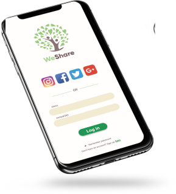
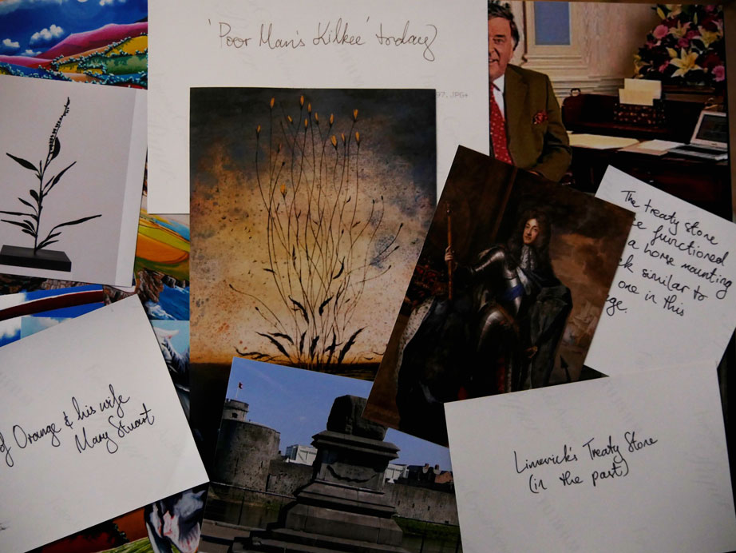
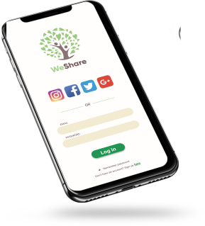
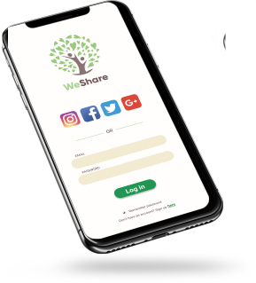

'In this page, I guide you through the various UX/UI projects that I have worked on. I am particularly interested in understanding the unique challanges and opportunities of designing an exeptional experiences.'
WeShare
concept walk-through

What?
We Share is an Irish web-based sharing service where people can swap, lend, borrow and give-away items and share skills and knowledge.
Why?
The website in its current form is very static and so the task was to re-design it as a mobile application. The main goal was to make it a more engaging, responsive and effective environment for the users to share, swap and gift items.
How?
The design process, described below, focuses on the first cycle of user-centered design process, up to delivering an initial version of a high-fidelity prototype. Illustrator and Figma were used as the two main design and prototyping tools. Onenote, Zoom and WhatsApp were used for brainstorming, communication and collaboration.
I worked with my colleague Stephen and it was an equally divided team effort with my responsibilities falling more into user-research and prototyping and Stephen being responsible for information architecture and UI design.
Competitive analysis
We did a competitive analysis of similar applications and services that already exist in the market to evaluate how they perform with the users. We then analysed user reviews and noted all the usability issues in order to pre-empt them in our designs.
'Buttons don't work, FAQ search renders results in another language, not user friendly. They need to add a feature where you can add what you are willing to lend and search for what you are trying to borrow. The idea of this app is great, though the scope is far too narrow. -N-
The next step was to test and analyse the WeShare website. The challange was to improve the user experience by converting the static environment of the website into a more social and interactive space and improve the usability by reducing the mental processing power needed to use the service.
The service is clearly valuable to people, proven by the sincere Thank you messages published on their website. This inspired us to work on improving the user-experience to help bring the idea of sharing to even more people!
Ideation, Crazy 8's and Wireflow
We used flow diagram to mark out all major user-journeys and functions that we need to include to improve the user-experience and make the service more efficient. We started with hand-drawn variations and once we settled on all functionality we created Wireflow in Ilustrator. At the ideation stage, we used the crazy 8's design sprint method to first open up the design space and then pick the best fitting ideas for prototyping. This step was crucial in helping us approach the design stage in Figma with much clearer concept.
High-fidelity prototyping
Style guide was created to keep the collaborative design process in sync. Colour palette was selected according to the existing brand identity but expanding the variety of shades to make functions more distinct. The typography was changed to make the the text more readable on a mobile device. The style guide assured that while working remotely all the designs were cohesive accross the project.
Figma was used to design the high-fidelity prototype. The software is great for supporting team collaboration and on-the-go communication. Even though working from two different locations, we had no issues with discussing the project, implementing necessary changes and monitoring the overal development of the project.
The deliverable of the project was an interactive high-fidelity prototype of the application with a demostration video of the functionality. To include the interactivity we used Figma. This was great as it allowed us to stay in the same environment. We found Figma to be flexible and powerful tool for prototyping, especially combined with the use of the Figma Mirror mobile application, that adds extra layer of realism to the final product.
'While working on this project, I learned a lot about collaborating on a project remotely and the UX design process up to the delivery of a high-fidelity prototype. I learned additional UI design skills from Stephen and I could help him with getting more comfortable working in Figma. Enjoy the demo video below!'
SULIS
usability evaluation
What?
With an ever-increasing number of people using mobile as their primary device for accessing information, this project was a usability evaluation of the Learning Management Software Sulis, specifically focusing on mobile use.
Why?
The data collected through usability testing produced valuable insights regarding usability of the software on mobile, as well as major pain points that were found while the users conducted the assigned tasks. The goal of the usability testing was to construct an overall understanding of the usability issues of the software, when used on a mobile device and to design recommendations for a structured way of addressing identified issues.
How?
The usability testing was done using Neilsen's 10 usability heuristics to better structure and analyse the issues an affinity diagram was used to group the issues and collate the findings accross the groups to draw more effective conclusion. Qualitative and quantitative data was collected on the severity of the individual issues to evaluate what effect these issues have on the users’ interactions with the software. I collaborated on this project with my colleague Enda from software development.
Persona and scenario
A persona and an overarching scenario was developed to create a more cohesive and natural setting for the usability test. The user-group for this testing were mature students. The users had three tasks to complete during the testing session and the focus was on testing the most-used functions of the software that would be of interest to the particular user-group.
Testing with users
Testing with users is essential to see how they approach different tasks and how they navigate the software. For easier analysis, all the tests were recorded and notes were taken during the testing. We also encouraged users to voice their thoughts while completing the tasks. The think-aloud method gave us better insight into the thinking process of the user. We also conducted a short interview before and after the testing to collect qualitative data about users opinions, feelings and use patterns of the software.
Making sense of it all
To analyse the data, we first used post-its to write out all the specific issues. We then used affinity diagram to synthesise the findings into groups of issues following Neilsen's 10 usability heuristics. We also created an Excel spreadsheet to easily see which issues were occuring most often and which had the most sever consequences. As part of the solution we assigned a level of ease of fix to each issue and added specific suggestions on how each of the issues could be either improved or eliminated.
'During this project, I learned how to work in a team with a software engineer, how to harness the different viewpoints, approach to the process and problem-solving to achieve the best outcome for the project. I also built on my experience conducting usability testing and interviews and of course analysing collected data and focusing on delivering actionable insights.'
Co-design workshop
What?
This was a co-design workshop organised to explore application of interactive technology in designing art and cultural heritage experiences.
Why?
I wanted to harness the creativity and design experience of my colleagues to explore the intersection between art, technology and design. The goal of the workshop was to discover and explore speculative design ideas and concepts to expand the design space.
How?
I worked in a group with other two people - Yan and Niamh, all of us had a common interest in art and technology. Together we created a presentation introducing the topic and covering information that would be helpful in the design process. We then designed the workshop part dividing the cohort into four groups and giving each group a 'black box' which contained their design brief, images and extra information on topic, cards reminding them about the technology solutions available, feedback forms and some sweets to keep them going!

When designing the workshop we had to keep in mind that most of our colleagues would not be familiar with the topics so it was really important for us to provide them with enough information and interesting design probes to get their creativity and ideas going.
We were impressed by the amount of engagement we saw during the workshop and the quality and creativity of the ideas that came out of it! I truly believe that the extra attention and time that we devoted to design good quality content for the groups to work with, was the key to success.
 
